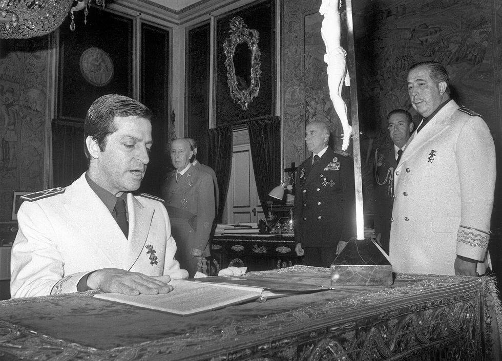
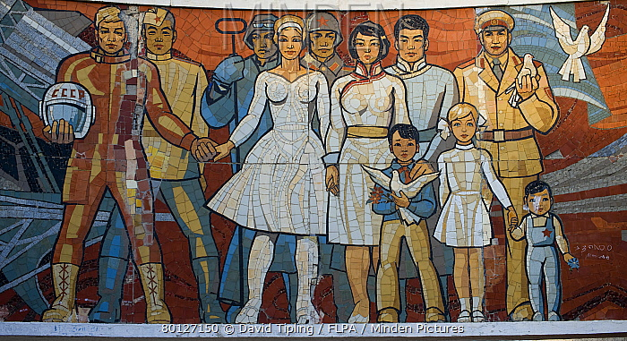

HILO-TESIS: La DESTRUCCIÓN Económica, Demográfica y Cultural DE ESPAÑA comenzó bajo el Franquismo, no bajo el R 78
HILO-TESIS: La DESTRUCCIÓN Económica, Demográfica y Cultural DE ESPAÑA comenzó bajo el Franquismo, no bajo el R 78
Si el Franquismo hubiese dejado una España culturalmente sana, hubiese dejado una España culturalmente resistente al R 78.
Pero no.La España de recien muerto Franco era una España muy, muy de izquierdas, arruinada en lo económico, antinatalista y totalmente corrupta culturalmente.
Si Franco hubiese hecho una buena obra cultural, el pueblo se hubiese opuesto al R 78 desde abajo.Pero no, el Pueblo colaboro entusiasmado con el R 78.
Hilo-Síntesis de toda una vida de lecturas y reflexiones muy, muy diversas.
¡Ojo!Les advierto que pueden acabar dándose cuenta de que el tardo-Franquismo NO es lo que les han contado (más bien todo lo contrario).
Lo advierto porque quien vea los materiales que presento (y si estudia las fuentes que aporto miel sobre hojuelas) saldrá para siempre del
Matrix que el R 78 nos ha montado contándonos que el Franquismo era lo contrario de lo que realmente fue.
En este hilo voy a hacer una crítica insólita del tardo-Franquismo (desde 1960):
* El R 78 es continuación del R 36.Jamás ha habido Ruptura.El Jefe del Estado actual lo es por decisión de Franco, con esta cadena de 'legitimidad': Franco -> Juan Carlos -> Felipe.
* El tardo Franquismo reprimía poco y mal (muy irracionalmente) a la oposición.Malos tratos a opositores de base y guante de seda a sus dirigentes.Algo absurdo.
* El tardo Franquismo permitía a enemigos declarados del Regimen trabajar en altos cargos para la administración del estado (el Comunista Ramón Tamames, por ejemplo), una práctica políticamente absurda que hubiese causado estupor en la URSS, por ejemplo.
* El tardo Franquismo permitía propaganda marxista abierta y legal, para colmo apadrinada por un Consejero del Movimiento (Joaquín Ruíz Giménez y sus 'Cuadernos para el Diálogo').Al mismo tiempo reprimía a Falangistas disidentes en rebeldía contra el 'Movimiento' oficial.
* El tardo Franquismo permitía y patrocinaba la destrucción de la cultura tradicional española.La 'Cultura Ye Ye' se fomentaba desde TVE.El Cine (el extranjero y el nacional) era completamente disolvente de los valores tradicionales.En el Irán de Jomeini en 1979 una de las primeras cosas que se hicieron fue destruir todos los cines.El tardo Franquismo por lo visto no tenía el menor interés en conservar la cultura tradicional de España.
No soy el
Antifranquista Standard del R 78.Soy lector y seguidor de Pío Moa, Ricardo de la Cierva y Stanley G. Payne.Soy de los que no han comprado la absurda demonización que el R 78 hace del Franquismo.Pero por los mismos motivos que no hay que
demonizar al Franquismo, tampoco hay que
'angelizarlo' .El Franquismo (pese a lo bueno que hizo, que fue bastante) tenía gravísimos defectos de base, defectos que han 'parido' al R 78, que es hijo deforme del R 36 que reniega de su padre.
Viendo el desastre del R 78 es muy fácil (en especial para los jóvenes) desarrollar una pseudo-nostalgia por la España tardo-Franquista (que jamás conocieron).
Tengo mucho más respeto personal (no intelectual, estan equivocados, pero el valor personal no se lo niego) por los Nostálgicos que SÍ conocieron el Franquismo, ellos al menos añoran lo que sí conocieron:
En realidad de los Polvos del Franquismo vinieron los Lodos actuales.El
Finis Hispaniae del que hablaba Blas Piñar comenzó bajo Franco, no en 1978 como Piñar creía (y respeto la figura de Blas Piñar por su integridad e inteligencia, pese a estar en sus antípodas ideológicas)
Todos los desastres actuales del R 78 nacieron y crecieron en la España de los años 1960.Se lo voy a demostrar.
Transcribiré en este hilo textos de este libro:
Y de este:
Ambos libros analizan el desastre total de la Economía española al morir Franco.
Tamames explica como recién muerto Franco la Economía española tenía problemas estructurales espantosos: El crecimiento bestial de los años anteriores tenía pies de barro.
Tamames fue uno de los firmantes de los 'Pactos de la Moncloa' de 1977 por el recién legalizado PCE:
Pactos de la Moncloa - Wikipedia, la enciclopedia libre
Tamames lleva toda su vida explicando como la 'traición a la clase obrera' de los Pactos en realidad no fue tal: Los Pactos se firmaron porque la situación económica era un desastre tal que amenazaba con degenerar en Revolución abierta o en Golpe Militar 'bestia' a la Chilena o Argentina.
Lean sobre la situación de España 24 meses después de la muerte de Franco:
La coyuntura económica La coyuntura económica era grave después de que la crisis del petróleo de 1973 alcanzara de lleno a España -a la que no había afectado tan rápidamente como a los países europeos considerados aliados de Israel por la OPEP-, el desempleo -que durante el franquismo quedaba ocultado por la emigración a Europa, y que ahora en crisis no admitía, produciéndose en cambio el retorno de los emigrantes-, la inflación había superado la frontera del 26%2 a mediados del año 1977, y se temía la posibilidad de alcanzar cifras de verdadera hiperinflación, como las que posteriormente sufrieron los países iberoamericanos.Se hablaba de fuga de capitales desde los últimos años del franquismo.Los empresarios, acostumbrados al corporativismo y al intervencionismo que presidía las relaciones económicas y sociales durante el franquismo, recelaban de la nueva situación política y de los nuevos interlocutores sociales, los sindicatos de clase, que exhibían una retórica reivindicativa que, según como fuera entendida, a veces era tomada por revolucionaria.
Pactos de la Moncloa - Wikipedia, la enciclopedia libre
La famosísima intervención de Fuentes Quintana en TVE es entonces, de 1977:
Lección magistral del profesor Enrique Fuentes Quintana - YouTube
Sí, es un 'gafapasta' muy serio, un tecnócrata de la vieja escuela que da sopa con ondas a los Solbes y de Guindos actuales, pero es que si escuchan ustedes la intervención que hizo verán que la situación económica a los 2 años de morir Franco era catastrófica, gravísima.
A Franco no le explotó la crisis de su sistema porque (como dijo un crítico suyo socarronamente)
'Tuvo la gran habilidad política de morirse en 1975' .
Tengo este libro de el médico que lo trató en sus últimos meses:
El médico le aconsejaba a un muy débil Franco que descansase, que no se excitase ni fatigase.
Franco le contestaba
'Mire, yo no puedo descansar, tengo muchos problemas muy graves y obligaciones ineludibles que atender' .
La lectura del libro es angustiosa: Franco sabe perfectamente que se está muriendo, pero al mismo tiempo trata de seguir dirigiendo y arreglando una España que -ya en 1975- se estaba haciendo pedazos.Por ejemplo el libro narra como Franco asiste a un Consejo de Ministros ya pre-sentado en la silla (para ocultar que ya no podía andar sin asistencia) y con sensores de Electrocardiograma escondidos.En la sala de al lado está el médico vigilando angustiosamente el cansado corazón de Franco mientras asiste al consejo de Ministros, lleno de problemas y malas noticias.
Les aconsejo enfáticamente que vean esta película 'maldita', prohibida por Suárez:
Después de - Wikipedia, la enciclopedia libre...
Está online.Seguir enlaces.
Los autores son progres (nadie es perfecto).Es igual porque es un documental muy 'bruto' en el cual sacan la cámara a pasear en ambientes muy diversos de la España de 1979-81.
La película muestra una España pre-Guerra Civil, con diferentes sectores de la población angustiados, hartos, cabreados y dispuestos a darse de tortas (o algo peor) con los españoles que no piesen como ellos.
En un post inferior he pegado varios clips de la película.
Franco no dejó una España saneada, tranquila y en orden.Más bien dejó una bomba a punto de estallar, como muestra el
Naif pero acertadísimo cartel de la película.
Al poco de morir Franco el paro se disparó como un cohete:
La Economía que dejó Franco NO era una Economía sana.
La HIPERINFLACIÓN TARDOFRANQUISTA jamás la hemos vuelto a alcanzar, afortunadamente:
La
'carestía de la vida' era una de las expresiones habituales de los años 1970.
Revista
'Ciudadano' de 1976.El Estado tardo-Franquista y de la 'Transición' maquillaba el muerto de la Economía española
'dándole a la maquinita' (de imprimir dinero, frase muy de los años 70) para disponer así de recursos por el
señoreaje estatal (el Estado 'gana' el dinero que crea de la nada):
https://www.google.es/search?q=seño...VROMAKHcGuDZYQ_AUICSgA=1920=943=1
El resultado ineludible era la Inflación desbicada.De eso se queja el 'Ciudadano': De que se trata de engañar al trbajador con anteojeras de billetes cada vez más devaluados.
Era tal el caos inflacionario de aquellos años, con la inflación asentándose fatalmente en los 2 dígitos anuales (puerta al Tercer Mundo) que la UCD lanzó una patética campaña llamada
'Precio Estable' :
Distintivo 'precio estable' para luchar contra la inflación | Edición impresa | EL PAÍS
Recordando la publicidad: El precio estable.
TVE 1977-1978 - YouTube
Minuto 2:00 ¡¡¡NO SE PÌERDAN EL ANUNCIO!!!.¡¡¡IMPRESCINDIBLE PARA ENTENDER QUÉ ERA LA PESETA INFLACIONARIA!!!
Los artículos 'Precio Estable' garantizaban el mismo precio durante 5 meses.
La UCD animaba a comprarlos para 'luchar contra la inflación'...como si la inflación no la causase la misma UCD 'dándole a la maquinita' (de hacer billetes), que era la expresión de la época para el aumento de la masa monetaria.
Como resumió mi padre a mi pregunta infantil sobre este anuncio apareciendo por la tele:
'Suben al precio que tendría el artículo con inflación y luego anuncian a bombo y platillo que tiene 'Precio Estable'.¡¡¡Como que ya lo han subido antes!!!'
Dediqué un hilo a mi experiencia de niño de la Inflación de la Peseta:
Economía: FOTOS que desmienten a los anti-€ que critican 'el robo del €'.Mismo tebeo pasa de 50 a 144 pesetas entre 1975 y 1986
Les recuerdo que todo nostálgico de la Peseta es un nostálgico de la Maquinita de hacer pesetas, esto es, de que el Estado Español NOS ROBE:
Una inflación del 18% como la de 1974 (por citar un año cuando aún vivía Franco) supone que de 100 pesetas que tenía usted a 1 de enero de 1974,
el estado le robó
en dinero real (no nominal) 18 pesetas a 31 de diciembre de 1974.
La inflación es un robo
.Los nostálgicos de la Peseta son nostálgicos del robo estatal a la población.
Posted On: 2018-02-22T00:00:00
Posted By: AYN RANDiano2
Sobre 1.5 millones de españoles emigraron durante el Franquismo
Según las cifras oficiales del Instituto Español de Emigración (IEE) entre 1959 y 1973 emigraron al continente europeo un millón de personas(1.066.440); el 71% de los que salieron fuera de España en esos quince años.
Las cifras de la emigración
Sólo a Alemania fueron 600.000 (¡!)
El éxodo de los 600.000 | Edición impresa | EL PAÍS
La tasa de ocupación durante el Franquismo era similar a la actual:
No 'trabajaba más gente' durante el Franquismo.Se trabajaba como ahora, más o menos:
Claro, el millón-millón y medio de españoles trabajando en el extranjero (y mandando divisas a España) no estaban en esta estadística.
Millón y medio de emigrantes eran sobre el
10% de la población activa
de 1970.Claro, así fue relativamente sencillo alcanzar el
'pleno empleo' (con la 'trampa' de la emigración).
El Franquismo se aprovechó (e hizo bien) de la bonanza económica de la CEE en los años 1960-70, que absorbía mano de obra española con gran facilidad...pero eso no es un 'mérito' del Franquismo.
Los 'Paquillos' (monedas de 100 pesetas de Plata) apenas circularon:
Debido a la inflación de la peseta casi nada más salir a la circulación la Plata que contenía el 'paquillo' valía ya más de 100 pesetas, esto es, el valor intrínseco de la moneda era superior a su valor facial.
La gente en los años 70 lo sabía y acaparaba y guardaba los paquillos, que estaban casi nada de tiempo en circulación, cumpliéndose así la
Ley de Gresham :
La Ley de Gresham es el principio según el cual, cuando en un país circulan simultáneamente dos tipos de monedas de curso legal, y una de ellas es considerada por el público como 'buena' y la otra como 'mala', la moneda mala siempre expulsa del mercado a la buena.En definitiva, cuando es obligatorio aceptar la moneda por su valor facial, y el tipo de cambio se establece por ley, los consumidores prefieren ahorrar la buena y no utilizarla como medio de pago.1
ley de gresham - Buscar con Google
Los que sí circulaban eran los billetes de 100 pesetas de Manuel de Falla, de nulo valor intrínseco en contraposición a la Plata de los paquillos.
Las monedas de 100 pesetas de Franco yo jamás llegué a verlas en circulación.Las últimas series la FNMT ni siquiera als puso en circulación, tan evidente era que su valor real en plata era muy superior a sus valor facial.Al final el gobierno Suárez las vendió a Suiza por su valor en plata, donde se fundieron.
Es irónico que hoy en una numismática la moneda de 100 pesetas del 'Rey' Juan Carlos se compra por 1€:
Pero los paquillos (aparentemente idénticos) se compran por 10 o 12€ (según valor plata e interés numismático de la moneda).
Las monedas del 'Rey' Juan Carlos tienen ya cero valor intrínseco como metal precioso.
[/INDENT][/INDENT]
Revista de marzo de 1976:
Esta era la 'confianza económica' recién muerto Franco:
mundo 1863 6 marzo 76 el bunker.paro, inflacio - Comprar Otras revistas y periódicos modernos en todocoleccion - 77273569
¿Les preocupa e indigna en sobreendeudamiento de las familias en la eXpaña del siglo XXI?
Pues sepan que el hábito de endeudarse comenzó en la España de los años 1960.
Les sugiero vean esta película:
Sobreendeudamiento Inmobiliario por presión femenina, Pluriempleo, Beta-Proveedor asfixiado por las deudas que le hace contraer su insaciable pareja (y su madre, cuyo objetivo es una Lavadora Automática, pagada por el Beta Alfredo Landa).Trabajos absurdos para sacar dinero (poco) de donde sea...

¡No firmes más letras, cielo!- Clip - YouTube
Cine de barrio - ¡No firmes más letras, cielo!- RTVE.es
Les parecerá todo actualísimo.
Pues es una película de...1972.Muy divertida y bien hecha, por cierto, pero llena de muy, muy mala uva y de muy interesante material sociológico sobre que resultaba 'divertido' (género humor negrísimo) en la España de 1972....porque reflejaba la realidad de la época (si no, no sería divertido).
Hasta los años 1960 las clases populares ni se atrevían a entrar en un banco.Lo normal era no tener ni cuenta bancaria (¡¡¡!!!).
Los sueldos se pagaban en efectivo en un sobre en mano a fin de mes (sí, increible pero cierto) y cada mes pasaba un señor con una cartera de cuero a cobrar el Gas, la 'Luz' o el Agua.En las grandes fábricas a fin de mes venía un furgón blindado lleno de efectivo y Guardas Jurados de revólver al cinto contaban el dinero delante de cada currela y se lo daban.Así se funcionab, sin bancos...y era lo mejor, la verdad: Así las clases populares mantenían una saludabilísima distancia con respecto a los Bancos (o sea, con respecto a...las deudas).
Esta situación comenzó a cambiar en los años 1960, cuando la incipiente Sociedad del Consumo empezó a meter a la gente en la cabeza la idea de que era 'bueno' y 'deseable' ENDEUDARSE para conseguir cosas:
TV a plazos.500 pesetas al mes.1963.
Compre una tele por 500 pesetas al mes.Las Provincias
Los desastres actuales comenzaron entonces, en los años 1960:
Más datos económicos aportados en el hilo:
jmslluch dijo: Dos acotaciones claves para entender la evolución de la economía española en la transición y mucho más importantes que la crisis del petroleo: La política de rentas | Edición impresa | EL PAÍS España se halla inmersa desde hace varios años en un proceso inflacionista cuyo origen no fue de inflación de costes, pero que hoy en día se perpetúa fundamentalmente por ese camino.Si se toman los salarios industriales como los más representativos de la compleja estructura salarial y se defiactan por el coste de la vida, vemos que el poder de compra de los asalariados aumentó entre diciembre de 1974 y el mismo mes de 1976 en un 20,2 % en España, en un 12 % en Francia, un 9,7 % en Suecia, un 8,9 % en Italia, un 3,2 % en Alemania Federal, mientras que permaneció estacionario en Gran bretaña y descendió en Suiza y Holanda, en un 0,9 % y un 2,4 % respectivamente.Las últimas informaciones disponibles señalan que los salarios nominales en la industria y la construcción estaban creciendo en los primeros meses de 1977 a un ritmo anual del 37 % frente aun crecimiento del 30 % del coste de la vida; es decir, nuestros salarios reales aumentaban alrededor del 5,5 % anual.Recordemos, el incremento del IPC de 1977 acabó siendo del 24.4%:
Por otra parte, asistimos en menos de 10 años al cambio estructural más importante de la economía española en cuanto al peso del estado: ROJO, Luis Ángel (2002) - La economía española en la democracia (1976-2000) CUADRO 11.2.ADMINISTRACIONES PÚBLICAS: DÉFICIT, RECURSOS Y EMPLEOS NO FINANCIEROS Hacer clic para expandir...Interesante post a desarrollar:
Personae dijo: Ya que hay tanto picacódigos por este vil foro, alguno de ellos podría hacer un script para darle thanks a Aynrandiano2 en cada hilo que tenga a bien abrir y en sus acostumbrados nueve primeros posts, si no es mucho pedir.A mí me haría la vida más fácil, pues me ahorraría muchos clics, e igualmente sospecho que prolongaría la vida útil de muchos ratones.Le ofrezco mis sinceras felicitaciones, Aynrandiano2.Esto encaja como un guante auque desde el estrecho frente económico, además, con las ideas trevijanistas, que usted conoce perfectamente.El R78 es una prolongación del franquismo, en efecto: de la tiranía a la oligarquía.La transición consistió en embarazar al Estado de partido único, que dio a luz al Estado de varios partidos.Hoy los partidos (y los sindicatos y la patronal) son los verdaderos órganos del Estado, como reza en la doctrina alemana del Derecho público.No hay política: sólo un chapucero reparto entre poderosos, el consenso, que paraliza tanto la lucha libre social y natural entre el trabajo y el capital como tantos otros legítimos conflictos de intereses, que no encuentran su cauce público de expresión y son sepultados, condenados a la clandestinidad de un foro cochambroso o a la de cualquier otro sucio lugar secundario, fuera de la vista del borregomatrix medio.Pero a ver quién le explica esto al personal, con lo felices que están, incluso aquí, con los partiditos de sus entretelas y sus libertades otorgadas y vigiladas.Educados en un antifranquismo vacuo dirigido a legitimar el régimen político actual, su vástago; la etapa superior del franquismo.Un peculiar neofranquismo dado la vuelta, por Franco y contra Franco por ello mismo.Aquí, en este foro, oh sorpresa, por mor de la estructura dialéctica de la razón y de aquello de que todo pensar consiste en pensar contra algo, se loa al franquismo como reacción a esta tendencia general que proponde a su vilipendio.Esta corriente marginal que vemos en burbuja será mayoritaria dentro de unos años en España, si el tinglado sigue por los derroteros que amenaza.En Italia el Partido demócrata, el equivalente de nuestro PSOE querido, está empezando a reivindicar la figura de Mussolini, por las mismas razones: el fracaso estrepitoso de su régimen vigente, que aunque con ruptura, está inspirado en el fascista y es totalitario por cuotas, parciaritario.No hay más que ver la proyectada y fallida, referéndum mediante, reforma electoral que pretendían, acercamiento indudable al partido único por turnos y tiro porque me toca.A lo que iba.Al ser en verdad una prolongación, ha de cargar contra su padre, para que nadie le afee la progenie, a modo de prolepsis, como Eminem en su batalla contra Papa Doc, si me disculpan la ramplonería de la comparación.Tiene que adelantarse a las críticas, para que nadie le llame lo que realmente es.La obsesión que tienen con el valle de los caídos, la dichosa memoria histórica selectiva y el cambio de calles se parece a la que la monarquía británica tiene con Cromwell: una vez muerto y enterrado, y restaurada la Corona, lo desenterraron y lo decapitaron.Eso han hecho durante estos casi cuarenta años los sinvergüenzas de sus herederos (que no son sólo el PP, como algunos pretenden; los del PP, por la vía de Alianza Popular de Fraga y sus siete magníficos ministros franquistas, es, en efecto, sus herederos forzosos, sí; pero no, la PSOE y el formalmente extinto PCE, hoy convertido en el necio binomo de IU y Podemos [GogETA], son también sus herederos, ¡pero herederos contractuales!Adquirieron la cuota hereditaria a cambio de legitimar al naciente régimen y a los franquistas que lo pilotaron en sus momentos iniciales): sacar a Franco del Valle de los caídos y lanzarle toda la Huerta de Murcia.Eso explique también profundamente los complejos del PP (lo de maricomplejines es una superficialidad losantiana), el Rottweiler, el cordón sanitario, etc.Los herederos contractuales ahora se fingen combatientes del franquismo, pretenden deligarse de los forzosos, sus socios, acusándoles de franquistas y de ser una mafia.Como la sartén le dijo al cazo.Porque el franquismo no se cerró, porque no se rompió con él, hoy no puede darse la coalición PPSOE, a la alemana.De esa dictadura por turnos nos libramos, a costa de la estabilidad del muerto.Eso sólo se lo traga un protestante con complejo de nazi.Allá ellos.En fin, que mil gracias por su análisis y sus puntos de vista originalísimos y provocadores.Queda por analizar la Ley General de educación de Villar Palasí, en pleno tardo franquismo (1970), que fue enteramente redactada por la UNESCO, y destruyó la maravillosa enseñanza media que contruyó, a imitación de la ideada por el socialista francés de finales del s.XIX Jules Ferry, el ministro de educación del bando sublevado Pedro Sainz Rodríguez (durante 1937, para más inri).Hoy no lo haré.Pero hay que datar allí, en el loado tardofranquismo tecnócrata, veinticinco años más tarde que el resto de Occidente y veinte antes de lo que se cree comúnmente en España, la destrucción de los colegios e institutos en nuestra patria.No fue la LOGSE, ella sólo allanó el camino ya empezado, siguiendo las enseñanzas de Piaget y Vigotsky, aunque ahora se le eche la culpa a los pedabobos, que solo son seguidores y víctimas de aquellos.Un afectuoso saludo.Es usted el destructor de todos los prejuicios e ideas preconcebidas, y un verdadero filósofo y amigo de la verdad.Cónsígala alcanzar en sus posts o no, que eso es lo de menos.Pero siempre la persigue.Cinco estrellas, como siempre, por sus empeños.Hacer clic para expandir...
Hoy los partidos (y los sindicatos y la patronal) son los verdaderos órganos del Estado
En mi aún ingenua juventud me asombré al ir a hacer un trámite en un edificio de la Junta de Castilla y León.Allí venía el directorio del edificio.Algo así:
Planta 3 Ordenación del territorio y Medio Ambiente Planta 2 Administración Planta 1 Servicios al Público Planta 0 Recepción Sótano 1 Archivo.Oficina atención UGT y CCOO
UGT y CCOO en un directorio de un edificio público, como si fuesen (¡lo son!)meros apéndices de la administración del Estado.
En muchas ciudades UGT y CCOO ocupan los edificios del antiguo Sindicato Vertical, en ocasiones hasta mantienen el logo en la fachada y todo:
Otro interesante post que complementa el hilo muy bien:
frangelico dijo: Así es.Mil veces se ha debatido en este foro, en el que abundan los compradores de paquetes ideológicos que parece deben incluir adquirir el franquismo en bloque tanto si uno es anticomunista como, más risible, si es anti 'régimen del 78' (que según algunos destruyó el colosal legado franquista cuando más bien es su continuación incluso con las mismas familias cambiadas de nombre).Añadiría a la bibliografía citada (el libro de Salgado-Araujo es muy revelador sobre las entrañas y expectativas del régimen) un libro ( 'Lectura crítica de
El Capital ', de Raúl Guerra G arrido) que, con la excusa de un secuestro de ETA, se da un paseo por la historia de la industria metalúrgica vasca durante el franquismo, con todos esos vicios ya mil veces relatados : proteccionismo, cuotas, violación de propiedad intelectual (esta es una de las claves de la rápidas ventas tras el ingreso en la UE, muchos propietarios, temblando ante los legítimos pleitos que les esperaban, aceptaron vender a la multinacional de la que papá había sacado idea, marca y a veces hasta producto), estrechez financiera, escala subóptima, relaciones complejas con la fuerza laboral... En la segunda mitad de la dictadura se hizo un gran esfuerzo de movilización de recursos que alcanzó cierto éxito, esto es cierto, pero el impulso estaba agotado en los primeros 70 y de hecho la situación, en la agonía del régimen, la salvaron: -EL acuerdo preferente logrado por Fernando María Castiella con la UE, que toleraba ciertas asimetrías comerciales muy favorables a España; y, pese a ello, la situación de la balanza comercial era dantesca y alcanzó lo preapocalíptico al elevarse los precios del petróleo.-La curiosa orden de ignorar la crisis petrolera poniendo progresivamente a cero el beneficio de CAMPSA, ahí se creó una bomba inflacionaria que estalló a minutos de morir el dictador (la inflación brutal de 1976-77 procede de ahí).-La emigración, que fue importante, porque 1,5M de personas en una población activa de 12M parecen pocos, pero es que había una trampa añadida en las imaginativas cuentas nacionales del momento: apenas 9M de españoles tenían un trabajo urbano, otros 3,5M eran 'trabajadores agrarios' de los que más de dos, no asalariados, es decir, supuestos autónomos, más bien gente al borde del hambre y en parte emigrados.Dada la catastrófica situación de la balanza por cuenta corriente, toda divisa era poca, pero además el alivio que representaba esa emisión masiva de trabajadores pudo ser clave para evitar tensiones en aquellos años.La mejor prueba de lo endeble de aquella estructura empresarial es que la España abierta al mundo (Canarias, Ceuta y Melilla) demandaba una cesta de bienes muy distinta de la del resto del país, pero no ya en electrónica o automóvil, es que incluso en alimentación y bebidas los gustos (modulados por los precios y calidades) eran bien distintos.En 1974 España es cierto que en algunos aspectos se codeaba con Europa: el salario medio no rural eran 264.000 Pts brutas anuales, que contra las 412.000 de Francia no eran mala marca (en realidad la proporción es la misma que hoy), pero es que asalariados urbanos eran 8M contra más de 18M en Francia, en el tardofranquismo el crecimiento fue elevado pero dibujó una España dual con ciertos grupos viviendo a nivel casi europeo y bolsas de miseria muy importantes; por eso el boom de crecimiento del Estado de 1975 a 1985 que ya se ha expuesto en este hilo y es de gran importancia, había regiones y comarcas del país que seguían en 1930 mientras otras ya estaban a nivel cuasi-europeo, aunque, eso sí, con la trampa del hiperproteccionismo que inflaba artificialmente la renta de las regiones industriales respecto al promedio: el País Vasco de 1970 tenía una natalidad que apuntaba a más de 3M de habitantes para antes de find e siglo y se ha quedado en 2M (siguen siendo ricos, pero a costa de ser menos).Seguramente si el franquismo hubiera terminado en los primeros 60 o incluso antes, se habría logrado en todo caso un crecimiento importante (en renglones como el automóvil fue impulsado por capital foráneo ya desde el principio) porque era el signo de los tiempos.En cuanto a lo demográfico, yo diría que más bien fue morirse Franco y comenzar el declive, pero hay razones de fondo más allá de una supuesta decadencia moral, la principal son los anticonceptivos, cuya demanda el régimen logró 'remansar' manteniendo a gran parte de la población en la ignorancia absoluta sobre su existencia y, cuando no se podía, creando todo tipo de mecanismos que los hacía inaccesibles.Hay tres fuerzas rectoras de la demografía: -El impulso biológico, tan fuerte que casi nunca se logra eliminarlo: en cualquier sociedad del orden del 70% de la gente se reproduce así caigan chuzos de punta, si acaso se puede modular el número de hijos.-la situación económica, que puede conducir a cierta contracción, pero siempre relativamente ordenada y moderada, incluso reversible en alguna medida: en España los 370k nacimientos de los primeros 90 se vieron superados hasta situarse en torno a 520k (75% del pico absoluto de los 60/70) durante la burbuja, para caer hasta los actuales 400 y pocos mil.-La tendencia social dirigida por los medios.Es importante pero no tantísimo, al menos no logra impedir unos niveles de natalidad de cierta entidad (España poduce reemplazos ahora mismo para 32-33M de personas, y la situación económica no es nada buena).La guerra propagandística es totalmente cierto que la perdió el franquismo, y seguramente consintió en ello, desde muy pronto.Hacer clic para expandir...
Última edición: 26 Feb 2018
Posted On: 2018-02-22T00:00:00
Posted By: AYN RANDiano2
LOS POLÍTICOS QUE CREÓ EL FRANQUISMO
Muerto Franco, el 'Cambio de chaqueta' fue generalizado y casi unánime, con muy pocas excepciones.Fernando Vizcaíno Casas parodió el 'chaqueteo' en este libro:

José Luis López Vázquez parodia -claro- a Adolfo Suárez, el 'Santo laico' del R 78:
1975.Suárez con Franco, jurando el cargo de Jefe Nacional del
Movimiento (la pseudo-'Falange' desfascistizada del tardo-Franquismo)
El ex-'Falangista' de 1975 en 1978 pasó a ser
'La vía segura hacia la Democracia' , ahora con chaqueta y corbata, el nuevo 'Uniforme' del R 78:
¿Pero no había ya
'Democracia' ?
¿Cómo demonios puedes al mismo tiempo presentarte a unas elecciones (falsamente) 'democráticas' y al mismo tiempo presentarte como
'Vía segura a la Democracia '?
Si no hay aún 'democracia', ¿qué clase de 'elecciones' son esas?
Y aquí ya el Suárez del CDS: El ex-'Falangista' (con perdón de los Falangistas verdaderos) , ex-'Centrista' ahora está (decía) a la Izquierda del PSOE:
Estoy más cerca de Redondo que de Felipe .Felipe era (claro) Felipe González.Redondo era Nicolás Redondo, secretario general de la UGT.
El Ex-'Falangista' Ex-'Centrista' se quería vender como más próximo a la UGT que al PSOE.
Suárez: Educado bajo el Franquismo, criado políticamente bajo la guía de Franco y factotum de la 'Transición'.
¿Y qué me dicen de Felipe González con uniforme de Milicias Universitarias?
Escudo que combina el Yugo y las Flechas con el Cisne del Cardenal Cisneros.
Milicias Universitarias - Wikipedia, la enciclopedia libre
¡Menudos 'valores' debió aprender allí viendo lo que hizo luego!
Leamos su Biografía:
Inicios (1942-1981) La situación económica desahogada de la que gozaba su familia le permitió cursar el bachillerato en el colegio de los Padres Claretianos, y después el preuniversitario en el Instituto San Isidoro, ambos en Sevilla.Posteriormente obtendría la licenciatura en Derecho en la Universidad de la capital andaluza.También estudió Ciencias Económicas en la Universidad de Lovaina, (Bélgica), carrera que no terminó.Durante su juventud militó en las Juventudes Universitarias de Acción Católica y en las Juventudes Obreras Católicas, de inspiración democristiana.En 1962 se afilió a las Juventudes Socialistas para incorporarse al PSOE dos años después.En 1965 finaliza sus estudios de derecho y en 1966 comienza a ejercer como abogado laboralista en Sevilla.En ese tiempo, entre 1965 y 1969, fue miembro del comité provincial del PSOE en Sevilla, de 1969 a 1970 del Comité Nacional y, a partir de 1970, figuró en la Comisión Ejecutiva, utilizando el alias de Isidoro en la clandestinidad.
Felipe González - Wikipedia, la enciclopedia libre
Un privilegiado del Franquismo, de clase acomodada, estudiando en centros de la Iglesia católica y -algo insólito en la época- permitiéndose estudiar en el extranjero.En una biografía suya leí que iba a la Universidad y a la Mili con un...Renault Dauphine.Un Dauphine en los años 1960 era un coche de serñor relativamente acomodado (mi padre tuvo uno).Que un mozo de la Mili tuviese uno es de súper-pijos de la época.
Socialista de carnet ya en los años...¡1960!Y mientras termina sus estudios universitarios y ejerce de abogado.
En la URSS los desafectos al regimen no podían siquiera entrar en la Universidad, pero en la España d elos años 1960 un Soclalista de carnet acaba su carrera y ejerce su profesión como si tal cosa.
Zapatero, ZP, el que destruyó el principio de Igualdad ante la Ley en eXpaña:
Zapatero:
Leamos su biografía:
José Luis Rodríguez Zapatero nació en Valladolid el 4 de agosto de 1960 11 en el seno de una familia acomodada, natural de León...Estudió Primaria en el Colegio Discípulas de Jesús, de León (1966–1970); Bachillerato y COU en el centro privado Colegio Leonés (1970–1977).De niño veraneaba en Luanco o en Gijón (Asturias).14 El 15 de agosto de 1976, antes de la legalización de los partidos políticos, asistió a un mitin de Felipe González en Gijón en el que se despertó su vocación política.15 Se afilió a las Juventudes Socialistas en 1979, al poco de cumplir la mayoría de edad, y fue secretario de la organización en León.15
José Luis Rodríguez Zapatero - Wikipedia, la enciclopedia libre
El nefasto ZP pasó sus primeros 18 años de vida en el 'Anterior Regimen' (pre 1978), educado además por la Iglesia católica y en un entorno de clase alta.Un niño mimado del Franquismo que por no hacer no hizo ni la Mili.
¿Y qué hace esta criatura educada íntegramente bajo el Franquismo y Post-Franquismo al alcanzar la mayoría de edad?
Afiliarse al PSOE.
Y 20 años después promulgar la LIVG.
Más sobre Fernando Vizcaíno Casas
Vizcaíno Casas era un señor muy, muy facha pero merece la pena leerle porque era muy inteligente y dejó por escrito como vivía un señor muy facha la España de la 'Transición'.
En este interesante libro narra su estupor ante la España de 1978, una España que -escribió- veía de repente sus calles inundadas de quinquis, maleantes, delincuentes, ye-yes, hippies y gentes que el pobre Vizcaíno Casas se preguntaba de dónde habían salido.
Habían salido del Franquismo, evidentemente.Eran todos nacidos, educados y criados bajo el Franquismo.
Superventas donde Vizcaíno Casas describe a los nuevo pijos de la 'Democracia'.Se vendieron centenares de miles d ecopias de este libro porque los lectores pensaron que reflajaba una realidad de la época.El retrato que pinta de los nuevos pijos de la 'democracia' es demoledor.
Les recuerdo que tales neo-pijos comenzaron su (des) educación viviendo aún Franco.
Por cierto, Vizcaíno casas era putero y glosador de las Putas:

Como Cela, otro insigne Franquista luego reconvertido en icono del R 78:


Es un libro sobre Putas.Las fotos estan tomadas en la Barcelona de los años 1960.
En la España franquista se consideraba la prostitución como 'un mal necesario' para que se 'desfogasen los bajos instintos' masculinos en mujeres 'perdidas', respetándose así la 'virtud' de las 'no caídas'.
Esta era la hipócrita 'moral pública' del Franquismo.
PROTO 'FEMINISMO' FRANQUISTA
El
Desprecio de sexo en el Código penal.La proto-LIVG Franquista.
El Franquismo resucitó la súper-protección legal a las mujeres:
desprecio de sexo franquismo - Buscar con Google
Las mujeres bajo el Franquismo tenían súper-protección jurídica, igual que desde 2004 con la LIVG.
El R 78 derogó el 'desprecio de sexo' en 1978 como medida 'igualitaria'.En 2004 con la LIVG lo reintrodujo bajo otro nombre.
Esther Vilar:
El libro que ninguna Feminazi querria que un hombre leyera !!!ESCRITO POR UNA MUJER !VILAR ESTHER - YouTube
¡Sorpresa!En 1972 el 'Macho Ibérico' ya era materia de ridículo general (en la figura payasesca de Alfredo Landa) y era público y notorio su status de beta-proveedor para sus amas y señoras.
Texto completo online:
http://es.wikimannia.org/images/Esther-Vilar_El-Varon-Domado.pdf
Tercer libro más vendido en España en 1975:
Esther Vilar - Wikipedia, la enciclopedia libre
Los hombres eran ya siervos de las mujeres en la España tardo-franquista.No de iure, pero sí de facto.La diferencia es que hoy los hombres son siervos de facto Y ADEMÁS de iure.
El 'Servicio Social'.
La 'Sección Femenina'.
Kyle Reese dijo: No sé si le descubro algo nuevo...sobre la 'sección femenina' de la falange, bastante revelador.Aproximadamente del minuto dieciocho al 20:00 del debate, no tiene desperdicio.Especial Informativo | La dictadura del feminismo radical - YouTube
Paso a cabecera.
Posted On: 2018-02-22T00:00:00
Posted By: AYN RANDiano2
PROEMIO A LA CRÍTICA DE LA CULTURA POPULAR TARDO-FRANQUISTA: CONTRA EJEMPLO DE LA URSS
Tengo este libro:
El autor (primo y ayudante de Franco) cita a Franco en los años 1960 diciendo (¡sorpresa!):
Actualmente sólo hay dos países en el mundo que saben a donde van: España y Rusia.
Bien, voy a enmendar la plana a Franco.
'Rusia' (la URSS) era mucho más Racional en la administración de la Cultura Popular que la España Franquista.
En la URSS la Propaganda era Omnipresente en la Cultura Popular, muchas veces era -sí- completamente falsa, pero al menos presentaba ejemplos dignos de emular, alturas morales y estéticas a las cuales se invitaba al ciudadano de la URSS a elevarse:
En la España tardo-Franquista los referentes de la Cultura popular eran los lamentables personajes de las 'españoladas':
He leido el 'Manifiesto Romántico':
The Romantic Manifesto by Ayn Rand - YouTube
The Romantic Manifesto - Wikipedia
En este libro imprescindible uno aprende lo siguiente:
El Arte es una representación selectiva de la realidad que concretiza los valores metafísicos del artista.El mensaje implícito de la obra de arte es que lo que el artista escoge como digno de ser representado, es símbolo de la vida del ser humano.Al escoger un tema artístico el artista dice implícitamente: 'Esto es la Vida''.
Desde este prisma las españoladas tardofranquistas son VENENO ARTÍSTICO, ya que presentan:
* Personajes absurdos, fracasados, risibles.
* Paletos babeando antes 'Suecas' y haciendo el ridículo contínuamente.
* Personajes al nivel casi de la subnormalidad.
EL ESTADO FRANQUISTA DESTRUYÓ LA CULTURA TRADICIONAL ESPAÑOLA
La Cultura Popular bajo el Franquismo estaba bajo control absoluto de el estado.
El estado podía prohibir o censurar cualquier obra, y lo hacía a menudo.Por ejemplo las novelas de Ayn Rand editadas bajo el Franquismo se les censuraron las partes más 'picantes' (para la época) y algunas cuestiones 'morales' adicionales:
Pues hete aquí que la 'Cultura Ye Ye' fue introducida en España por la entonces monopólica TVE Franquista, como explican en este libro:
A los 3 años de la muerte de Franco Madrid estaba inundada de los satánicos sótanos oscuros, atronadores, pestilentes y humeantes que se daban en llamar
'Discotecas' (una Discoteca en el Español
Oldspeak de antaño era aun armario deonde se guardaban discos, como una Biblioteca):
21 ABR 1978 Si el diablo cojuelo se dedicara hoy a mostrar los males del siglo madrileño tendría que profundizar más allá de los tejados de las buhardillas.Tendría, sin duda, que bajar a esos más de doscientos sótanos coloreados y oscuros, humeantes y ruidosos, limitados y simbólicos que son las discotecas.Madrid es una de las ciudades de Europa con mayor índice de discotecas percapita.Y es que la vida en las ciudades desciende cada vez más hasta las alcantarillas.
Las discotecas urbanas, un fenómeno sociológico | Edición impresa | EL PAÍS
ABC 1978: 5.000 (¡CINCO MIL!)discotecas en España:
B ha podido comprobar la existencia de unas cinco mil discotecas en España
Blanco y Negro (Madrid) - 22/11/1978, p. 42 - ABC.es Hemeroteca
Las 'Discos' y los Estadios sustituyeron a las Iglesias.
Y sucedió durante el Franquismo, NO durante la 'Transición'.La Transición de verdad (la Cultural) se hizo desde los años 1960.
La absurda y anémica política represiva Universitaria del Franquismo
Tengo este libro, que aconsejo a todo el mundo:
En él explican como en la URSS era imposible entrar en la Universidad soviética si uno no tenía un historial irreprochable de conformidad al sistema.
Cualquier rebeldía, cualquier acto de protesta mientras uno estaba en la Universidad suponía la expulsión inmediata e irreversible.Por esoi las Universidades soviéticas eran Balsas de Aceite de tranqulidad y estudio: Cualquier indisciplina suponía la expulsión inmediata e irreversible de todo el sistema educativo de la URSS.
Vean la lista completa de protestas estudiantiles en la historia completa de la URSS:
Category:Student protests in Russia - Wikipedia
2.En 74 años de URSS.Ambas protagonizadas por estudiantes extranjeros.Los soviéticos jamás se movieron...por la cuenta que les traía.
Esto es una Dictadura Racional, administrando castigos de forma racional para conseguir orden y obediencia.
El Franquismo era una dictadura Irracional, en la cual los estudiantes universitarios podían hacer huelga, interrumpir las clases, manifestarse, enfrentarse a la policía, afiliarse a partidos ilegales de la oposición y...terminar sus carreras , ejercer y hasta trabajar para el estado como si tal cosa.
Estudiemos algunos casos.
Caso Tamamaes:
Ramón Tamames - Wikipedia, la enciclopedia libre
'Activista', afiliado al PCE y detenido en 1956:
Sucesos de 1956 - Wikipedia, la enciclopedia libre
No es que no fuese expulsado de la Universidad, es que temrinó trabajando para el Estado Franquista en puestos directivos, algo realmente increíble:
Biografía Los estudios secundarios los hizo en el Liceo Francés de Madrid, y los universitarios los cursó en las Facultades de Derecho, y de Ciencias Económicas, de la Universidad de Madrid, ampliando sus conocimientos en el Instituto de Estudios Políticos y en la London School of Economics.Técnico comercial del Estado desde 1957, por oposición (en excedencia voluntaria desde 1969), es catedrático de Estructura Económica desde 1968; primero en la Facultad de Málaga, y desde 1975 de la Universidad Autónoma de Madrid.En marzo de 1992 fue designado catedrático Jean Monnet por la Comunidad Europea.
No tengo ninguna antipatía hacia el Sr. Tamames.Todo lo contrario, me cae muy bien desde que supe de su existencia en la campaña del 'NO' en el referendum de la OTAN (1986).Simplemente me maravillo y asombro de que el tardo Franquismo diese un puesto directivo estatal a un Comunista de carnet.
No es de extrañar que los Universitarios bajo el Franquismo tratasen al sistema como al Pito del Sereno.Tengo un par de libros sobre los 'Grises' y su desmoralización era total: Se veían atados de pies y manos a la hora de reprimir las algaradas estudiantiles.Los estudiantes eran los Niños Mimados del Regimen y este les dejaba montar sus performances en las universidades.
Con una centésima parte de lo que hacían impunemente los universitarios españoles en la URSS uno era expulsado para siempre jamás del sistema educativo soviético.
En la URSS jamás pasó que los estudiantes 'tomasen' sus facultades:
En la URSS la propiedad estatal era sagrada, y tomarla implicaba convertirse en un paria social, con penas durísimas.Jamás se 'tomó' ninguna universidad soviética, porque todo el mundo sabía que las represalias hubiesen sido instantáneas e implacables.
Las algaradas estudiantiles del Franquismo no eran porque este fuese 'represor'.Eran porque era muy poco represor, y para colmo con muy poca cabeza: Hubiese bastado el anuncio de la expulsión irreversible de todo estudiante revoltoso para frenarlas en seco...pero no, los revoltosos terminaban sus carreras y hasta pasaban a trabajar para el estado.Algo absurdo en una dictadura.
Última edición: 25 Feb 2018
Posted On: 2018-02-22T00:00:00
Posted By: AYN RANDiano2
¿Qué me dicen de este vídeo?
Guilty Gear dijo: No sé, estaba viendo movidas de los 70, a raíz del hilo: Vuelve la serie Cuéntame.Y he visto esto y me quedé loco Es más sensual que otra cosa, pero juraría que es de la época de Franco y no me cuadra.¿Qué opináis?.PD: La tal Pepa Flores, siempre me ha parecido de las actrices más guapas que hemos tenido.El hecho de que cuente lo turbio de su vida, en el star system, me hace pensar que el franquismo, en parte, tiene tanta mala fama por la cantidad de pedófilos y babosos viejunos habidos en la época.Hacer clic para expandir...
El vídeo es del tardo-Franquismo.Todas esas mini-mini faldas contoneándose...¿No es un pelín....
excesivo para una (supuesta)
'España Nacionalcatólica' ?Marisol además era la Miley Cirus del Franquismo: Era la Niña de las películas de los 60.Este vídeo hipersexualizado era teniendo como protagonista a quien era una NIÑA en la mente de los espectadores.
En los 70 MARISOL YA HACÍA BAILES DE TRAP GUARRINDONGOUS - Burbuja.info - Foro de economía
¿Les parece excesivamente escandaloso el
Cameltoe de estas tipas?
Pues el el
'1, 2, 3' de Quico Legard, aún en vida de Franco:
Un, dos, tres... responda otra vez - Wikipedia, la enciclopedia libre
¿Les parece excesiva esta minifalda?
Pues es de una revista del año 1970.las fotos estan tomadas en Pamplona.
PRUEBA: AUTHI MINI 1000 - PIEL DE TORO - LA WEB DE LOS COCHES CLASICOS
¿Qué les parece el modelito?
PRUEBA: AUTHI MINI 1275 GT (II) - PIEL DE TORO - LA WEB DE LOS COCHES CLASICOS
AUTHI.Filial Hispana de BL.
España 1970.
PRUEBA: AUTHI MORRIS 1300 (I) - PIEL DE TORO - LA WEB DE LOS COCHES CLASICOS
PRUEBA: AUTHI MORRIS 1300 (II) - PIEL DE TORO - LA WEB DE LOS COCHES CLASICOS
¿Les parece demasiado culo para una portada?
Pues es de 1971.
En 1994 el lamentable PSOEista Gregorio Morán (el de los célebres entonces
Chistes de Morán ) dijo esta memez:
Morán, más animado que nunca e imbuido del tono festivo reinante en el lugar, se permitió algunas frases hasta ahora inéditas en él.Por ejemplo, se refirió al cabeza de lista del Partido Popular, Abel Matutes, en estos términos: 'En televisión he tenido que desmontar las falacias de mi opositor el banquero'.Después habló de las rebeliones de los comuneros castellanos y del espíritu libre de las gentes de esta región para aseverar que no eran conservadoras y que 'ha habido una clase determinada que ha ahogado a Castilla'.Morán atribuyó a los gobiernos del partido socialista el dinamismo de la España actual.'Hay una España
minifaldera
y alegre frente a la de los hábitos y la tristeza', concluyó.
https://elpais.com/diario/1994/06/04/espana/770680805_850215.html
Es una memez digna de Morán.Y además encima es MENTIRA: España era ya 'minifaldera' bajo Franco.
* En los años 1950 se exigía las mujeres españolas 'decentes' la falda por debajo de las rodillas (¡como mínimo!), los brazos cubiertos y la mantilla en la Iglesia.
* La moral tradicional se destruyó en los años 1960.En los años 1970 ya nadie se la tomaba en serio en España.
* En los años 1970 ya era normal entre las jóvenes españolas vestir unas ropas que nos resultarían escandalosamente sexualizadas incluso a nosotros ahora.
Por eso la natalidad comenzó a caer ya en vida de Franco (siguiente post)
LA NATALIDAD YA ESTABA DERRUMBANDO EN VIDA DE FRANCO
La Natalidad de 1975 era 'buena' sólo en relación con lo que vino después:
En realidad venía ya desdendiendo desde mediados de los años 1960.El 'Baby Boom' había terminado ya en 1965.
Si Franco hubiese dejado un país culturalmente sano, la Natalidad no se hubiese derrumbado nada más morir 'El Caudillo'.
España estaba ya podrida y muy enferma culturalmente a finales de los años 70.No se destruye culturalmente a un país en unos meses.El desastre venía de muy, muy atrás, del tardo-Franquismo.
¿Creen que el Pluriempleo es cosa de ahora?
Les presento a
PLURILÓPEZ
plurilopez - Buscar con Google
Es un personaje de...1977.
¿A qué les parece actualísimo?
Constancio Plurilópez es un hombre increíblemente pluriempleado, siempre corriendo a fichar en un trabajo cuando apenas acaba de fichar en la salida del otro, hasta el punto de que tiene que aprovechar para comer algo mientras está sirviendo en uno de sus empleos de camarero.El objetivo de tanto esfuerzo es el de
instalarse en un piso con su novia Pepita
, pero entre que Plurilópez nunca consigue un ascenso y su mala suerte general apenas logra llegar a fin de mes, menos aún ahorrar.En algún momento, sin embargo, Plurilópez logró adquirir el ansiado piso y la serie pasó a titularse Constancio, el vecino del quinto y a centrarse en los líos vecinales en los que el personaje se metía debido a su buena fe.
Constancio Plurilópez - Wikipedia, la enciclopedia libre
Lean, lean, es de 1977: Verán como les suena a modernísimo.
Posted On: 2018-02-22T00:00:00
Posted By: AYN RANDiano2
VOCACIONES SACERDOTALES Y CRISIS EN LA IGLESIA CATÓLICA
Las vocaciones sacerdotales estaban ya en claro declive desde los años 1960:
Anexo:Crisis de vocaciones en España - Wikipedia, la enciclopedia libre
Transcribo la suma de seminaristas mayores + menores para cada curso entrante en los años en los cuales existe ese dato:
1959 22412
1961 23261
1962 21058
1963 22775
1964 19487
1965 16208
1966 14346
1968 18546
1973 15767
1974 12123
1975 10830
1976 10785
2002 3467 (¡¡¡!!!)
2003 3333
2004 3449
El pico de vocaciones fue en 1961.En 1968 comienza un declive irreversible.En 1968, no en 1975.La crisis de la Cultura Tradicional Española data de los años 1960, no de los años 70.Los problemas se manifiestan en los años 60, por lo que deben de datar de aún más atrás.
Ahora analizo sólo el número de Seminaristas Mayores:
1959 8021
1960 8037
1961 7972
1962 7934
1963 8233
1964 8079
1965 8079
1966 7535
1967 7106
1968 6605 INICIO CAÍDA
1969 4978
1970 4822
1971 3413
1972 2791
1973 2793
1974 2371
1975 1613 (¡¡¡!!!)
1976 1746
1977 1649
1978 1505
1979 1583
1981 1684
1982 1801
1983 1850
1984 1901
1985 2022
1986 2092
1987 2115
1988 2034
1989 2032
1990 1997
1991 1939
1992 1947
1993 1941
1994 1951
1995 1917
1996 1900
1997 1931
1998 1997
1999 1825
2000 1797
2001 1736
2002 1699
2003 1597
2004 1524
El colapso de las vocaciones en este caso comienza en 1968.
Para 1975 las vocaciones son ya tan pocas como las actuales.
Para colmo desde los años 1960 aparecieron los 'Curas Obreros' en España, invariablemente de extrema izquierda:
Sacerdotes obreros - Wikipedia, la enciclopedia libre
Curas montando ilegales huelgas en 1967:
Esto fue un superventas en los años 60 y 70:
La pluma viperina: LOS CURAS COMUNISTAS
Un ejemplo de 'Cura Obrero' que terminó en Herri Batasuna:
Pedro Solabarria - Wikipedia, la enciclopedia libre
El Padre Llanos, Jesuita, aspirante a Divisionario Azul, guía espiritual de Franco y finalmente...del PCE:
Misa-Homenaje a este tipo:
¡Qué ironía que no hubiese sido Jesuita durante los años 1930 para que hubiese podido 'disfrutar' del PCE de entonces!(le hubiesen dado matarile)
Su hipnozumbólica biografía:
José María de Llanos - Wikipedia, la enciclopedia libre
De intentar alistarse en la División Azul y dirigir el Retiro Espiritual del mismísimo Franco de 1943 a afiliarse al PCE.
Casi invariablemente estos 'Curas Obreros' terminaron todos abandonando el Sacerdocio.
EDITORIAL ZYX, MARXISMO PURO 'APOSTÓLICO' DESDE 1963
La Historia de ZYX, editorial marxista y católica (¡¡!!)
file:///C:/Users/jose/AppData/Local/Temp/Dialnet-EditorialZYXSA-5238053.pdf
Editorial ZYX, S.A.: Editorial Obrera contra el Franquismo - Dialnet
Algunos títulos de ZYX editados bajo Franco:

¿Comprenden ustedes ahora de dónde salieron tantos Socialistas, Comunistas y Progres a la muerte de Franco?
¡Se habían estado 'formando' bajo el Franquismo!
Posted On: 2018-02-22T00:00:00
Posted By: AYN RANDiano2
PROPAGANDA MARXISTA ABIERTA Y LEGAL DURANTE EL FRANQUISMO
Durante el Franquismo se permitía la propaganda Marxista:
Cuadernos para el Diálogo - Wikipedia, la enciclopedia libre
'Cuadernos' se publicó desde 1963 a 1978.
Tengo tomos encuadernados.
Son Marxismo puro, a nivel del PCE.Por ejemplo proponen como 'solución' a las empresas quebradas que sean expropiadas sin compensación por el estado y regaladas a los trabajadores, ya que los empresarios se han mostrado 'incompetentes' para gestionarlas.Con esta 'lógica' en el Chile de Allende los obreros hacían quebrar primero la fábrica (con huelgas y sabotajes) y luego se la quedaban.
Todos los clichés progres actuales estan ya en 'Cuadernos': 'Feminismo', 'Anti-Racismo', USAfobia, 'Internacionalismo', Tercermundismo...todo.
Ricardo de la Cierva resumió a los 'Cuadernos' como
'Cristianos dialogando sobre hacerse Marxistas, pero nunca jamás Marxistas dialogando sobre hacerse cristianos' .
En efecto, el camino era unidoreccional: Todo Cristiano interesado en marxismo acababa haciéndose Marxista, pero nunca al contrario.
Para colmo el fundador y director de esta central de propaganda marxista fue presidente de la Asociación Católica de Propagandistas, Ministro de Educación y 1000 y 1 cargos Franquistas más:
Joaquín Ruiz-Giménez Cortés militó desde muy joven entre los estudiantes católicos, de cuya organización fue presidente.Estudió derecho en la Universidad Central, licenciándose en 1934, y, posteriormente cursó estudios de filosofía en el mismo centro hasta el comienzo de la Guerra Civil.3 Fue presidente de la organización internacional Pax Romana (1939-46).Doctor en Derecho y licenciado en Filosofía y Letras, obtuvo en 1943 la cátedra de filosofía del Derecho y fue titular de la misma en las universidades de Sevilla, Salamanca y Madrid.En la década de 1940 su pensamiento se enmarcaba dentro de la línea neotomista mayoritaria.4 Fue el primer director del Instituto de Cultura Hispánica, sucesor del Consejo de la Hispanidad,5 entre 1946 y 1948.6 Desempeñó el cargo de embajador ante la Santa Sede (1948-1951) durante las negociaciones del Concordato (firmado finalmente en 1953), fue nombrado ministro de Educación Nacional en 1951, iniciando un proceso de reformas de las instituciones docentes; para ello se rodeó de colaboradores procedentes de Falange Española: nombró a Joaquín Pérez Villanueva como director General de Enseñanza Universitaria, a Pedro Laín Entralgo rector de la Universidad de Madrid y a Antonio Tovar de la Universidad de Salamanca.A iniciativa de Ruiz-Giménez, el falangista Jorge Jordana Fuentes fue nombrado jefe nacional del Sindicato Español Universitario (SEU).78 Tuvo que dimitir en 1956 ante las dificultades de su empresa y su enfrentamiento con los elementos más inmovilistas de la dictadura del ejército.Durante estos años tuvo a sus órdenes en el Instituto de Cultura Hispánica y como secretario general técnico a un joven Manuel Fraga.Desde entonces fue acercando sus planteamientos políticos a los de la oposición al régimen.Unos disturbios estudiantiles le enfrentaron al ministro de la Gobernación y pusieron al régimen en un aprieto, que se saldó con su destitución (1956).En 1961, el general Franco le nombró consejero nacional del Movimiento.Cuadernos para el Diálogo En 1963, fundó la revista Cuadernos para el Diálogo, siendo su director y convirtiéndola en un foco de protesta de los democristianos avanzados, de los que fue cabeza en los últimos años de la dictadura.
Joaquín Ruiz-Giménez - Wikipedia, la enciclopedia libre
Es asombroso, alucinógeno: Es como si el Franquismo mismo y la iglesia católica generasen Propaganda Marxista...pero es que eso mismo es lo que sucedió.
En los años 60 y 70 era de buen tono y de persona 'culta' y 'refinada' leer 'Cuadernos'.
En
'Los chicos del PREU' ...
(Esa falda en los años 50 hubiese sido propia de prostitutas)
...el ejemplar e inflexible profesor 'hueso' (al fondo)...
...es caracterizado como personaje
'duro pero justo' al vérsele leyendo 'Cuadernos' en su casa.
Los chistes de Forges de los años 60 y 70 estan llenos de referencias a 'Cuadernos' que -repito- eran propaganda Marxista abierta y sin adulterar, impresa y distribuida abiertamente con permiso de las autoridades franquistas.
EL EJÉRCITO FRANQUISTA
El eXpañol del siglo XXI desde su casi perfecta ignorancia del pasado asume que como Franco era Dictador y era un Militar, pues el Ejército estaría estupendamente bajo el Franquismo.
Nada más lejos de la triste realidad.Hay varios libros sobre el paupérrimo Ejército Franquista.Por ejemplo:
El gigante descalzo.El ejército de Franco
EL EJÉRCITO DE FRANCO: UN GIGANTE CON PIES DE BARRO
El Ejército bajo Franco estaba siempre a la 4ª pregunta, con material de museo, sólo renovado gracias a las donaciones de chatarra militar USA, que venía a sustituir a chatarra aún más antigua de la Guerra Civil.
La explicación que dan historiadores como Stanley G. Payne (
El Franquismo ) es que el Ejército ya era ultra-fiel a Franco por su carisma entre los militares, por lo que Franco -al no verse amenazado desde el exterior- pudo 'permitirse' hacer del Ejército el pariente pobre del Estado Franquista, ahorrándose así mucho dinero disponible para otros fines más provechosos.
Además había un espíritu en el Ejército Franquista de desprecio hacia lo moderno, ya que el mito decía que se había ganado la Guerra Civil contra unos 'Rojos' mejor equipados (sí, los 'rojos' estaban mejor equipados, al menos al principio) a base de 'ardor guererro', espíritu de sacrificio y los muy ibéricos 'cojones'.
Esta versión española de Bf109 de los años 1930 (¡!)estuvo en servicio en España hasta 1965 (¡!):
Hispano Aviación HA-1112 - Wikipedia, la enciclopedia libre
Los Ju52 se mantuvieron en servicio hasta...¡1978!
Los Panzer IV que franco compró a Hitler en 1943 se mantuvieron en servicio hasta 1965, cuando ya eran totalmente inútiles:
Franco se los vendió a Siria (¡!), salvo 2 o 3 que permaneen en España como piezas de museo (uno está en el jardín de la D.A. de Burgos).Casi todos fueron destruidos en la Guerra de los Seis Días (1967).Algunos han terminado en museos militares israelís (¡!)como material capturado.
Tengo varios libros de la
Editorial San Martín sobre camiones y blindados del Ejército Español.En ellos se explica como hasta los años 1970 se mantenían en los cuarteles vehículos militares totalmente reventados, fuera por completo de su vida útil, chatarra autopropulsada de cero valor militar y que penas podía autopropulsarse en llano y sin carga, requiriendo contínuas y cada vez más absurdas reparaciones.
Ir a la mili hasta los años 1970 era como entrar en una película de la 2ª Guerra Mundial, por la vetustez del material.
De hecho muchas películas de la 2ª Guerra Mundial se hicieron en España por la baratura del país y porque el Ejército Español mantenía en servicio material que eran piezas de museo en el resto dle mundo.Por ejemplo:
La Batalla De Inglaterra TACATACATACATACATACATACA - YouTube
Rodada parte en España ('Berlín' es San Sebastián, 'Normadía' Zarauz...) y con 'Bf 109', Ju52 y He111 del Ejército del Aire:
La batalla de Inglaterra (película - Wikipedia, la enciclopedia libre)
'Patton' (1970), rodada también en gran parte en España:
www.youtube.com/watch?v=ylctG69bHQc
El tanque de detrás (como todos los de la película) es un ya entonces vetusto M 48 del Ejército español, chatarra USA que mejoró algo la aún más obsoleta chatarra de los años 30 y 40.
El Ejército español de los años 1960 era adecuado para rodar películas de la Segunda Guerra Mundial.
La desastrosa Guerra de Ifni (1957-58)
https://es.wikipedia.org/wiki/Guerra_de_Ifni
El mapa lo dice todo:
La infinita miseria militar, material y moral de aquella guerra la narra Amadeo Martínez Inglés en este libro:

Los soldados españoles en Ifni combatieron malamente con material de chatarra, harapos y alpargatas en vez de uniformes y botas, material que venía de la península ya mermado por robos en intendencia y -para colmo- con una mano atada a la espalda por restricciones políticas.martínez Inglés cuenta como los moros les robaban (¡¡¡!!!)las minas de defensa de su perímetro, y que como tenían prohibido disparar si no les disparaban (por razones políticas) tenían que intentar impedir que los moros robasen las minas de defensa...¡a pedradas!(¡¡¡!!!)
Les recuerdo que en 1975 Marruecos invadió el Sahara Español con civiles (¡¡¡!!!), y España renunció a defender lo que era suyo:
Marcha verde - Wikipedia, la enciclopedia libre
Esta es la obra militar del franquismo: Civiles marroquís invadieron suelo español y nuestro Ejército se batió en retirada sin defender el territorio nacional.
Franco aún vivía.Estaba ya agonizando pero vivía.
Incidentalmente, los Saharauis son españoles de pleno derecho:
Nacionalidad española Todos los habitantes nativos del Sahara recibían el Documento Nacional de Identidad (DNI) y el pasaporte españoles, junto con el libro de familia, y todos los documentos correspondientes.22 Este hecho demostraba la plena nacionalidad española de sus habitantes y fue esgrimido en los recursos realizados por ciudadanos saharahuis a fin de demostrar que su pérdida era nula, dado que ningún nacional español puede ser desprovisto de ella y así fue reconocido por el Tribunal Supremo.23
https://es.wikipedia.org/wiki/Sahara_español
Los Saharauis en España no son 'inmigrantes'.Son españoles de pleno derecho.Trátelos como a tales porque bastantes injusticias y traiciones han sufrido ya.
Ah, Franco era 'Africanista': Llevó a la muerte a innumerables reclutas españoles para defender las 'posesiones españolas en África'.
Bajo su mando las perdimos todas.Vaya paradoja, ¿eh?El 'Africanista' 'hecho en África' fue el que se desentendió de África una vez en el poder, obligando a los soldados españoles a combatir
a pedradas
a los moros.
Posted On: 2018-02-22T00:00:00
Posted By: AYN RANDiano2
REVISTA 'CIUDADANO'.EL DESASTRE DE LA VIDA BAJO EL FRANQUISMO
Mis padres compraban esta revista en los años 1970.Yo guardaba todos los números y los leía y releía fascinado.El panorama que pintaban era desolador.
Sintetizo con portadas de
'Ciudadano' de los años 1970:
Portada de plena actualidad en 2018...pero es que es de 1976.
Desfase entre precios y sueldos.¡Qué actual!¿Verdad?Pero es de 1976.
Ah, aquellos coches sin catalizador y quemando gasolina con plomo.Recuerdo los atascos en el parking de El Corte Inglés de aquellos tiempos.Uno REALMENTE SE QUEDABA SIN AIRE.
Adulteraciones alimentarias.Omnipresentes entonces.
¡Qué tema tan actual!Pero este número se imprimió aún en vida de Franco.
El chiste macabro de que un Piloto de Fórmula 1 y un paciente de la Seguridad Social se parecían en que
'morían con el volante en la mano' yo lo conozco desde los años 1970.
La SS 'racionaba' sus 'servicios gratuitos' con laaaaaaaargos tiempos de espera, que muchas veces desgraciadamente 'resolvían' el asunto por fallecimiento del paciente...
'con el volante en la mano' .
Última edición: 22 Feb 2018
Posted On: 2018-02-22T00:00:00
Posted By: AYN RANDiano2
Viñetas de Perich:
Perich dibujaba como 'malo' al capitalista arquetípico de la propaganda soviética:
Chistera, Levita y Puro:
En la España Franquista el 'humor' era indistinguible del 'humor' soviético.
Clips de
'Despues de...No se os puede dejar solos...Atado y bien atado' , rodados entre 1979 y 1981:
Absolutamente nadie estaba contento.
Los 'Ultras' (el 'Búnker') no querían ningún cambio, y para los 'Progresistas' los cambios eran completamente insuficientes.
Los escándalos de corrupción del tardo-Franquismo:
El 'Buen gobierno' del Franquismo se revela como un MITO cuando analizamos los casos de elefantiásicos timos evidentes dejados proliferar y hasta ayudados (ayudas del ICO a Rumasa, 'Jerarquías' en Sofico) por el estado tardo-Franquista.
El Franquismo tuvo también sus Gowex, Bankia, Popular o Banestos.
SOFICO
SOFICO - Buscar con Google
SOFICO - Wikipedia, la enciclopedia libre
SOFICO - Buscar con Google
Málaga en blanco y negro: SOFICO II Congreso
RUMASA
El Franquismo ayudó a Rumasa, un engendro de empresas con propiedad sobre bancos que no se hubiese aceptado por principio (
connected lending ) en ningún país civilizado:
https://burbuja.info/inmobiliaria/b...uiz-mateos-q-e-p-d-rumasa-y-nueva-rumasa.html
FIDECAYA
https://www.google.es/search?q=fide...-ab=cr=0=LjeUWrj2L6mp8wezy72gCw
www.youtube.com/watch?v=a1Vpvt6I06o
MATESA
Posted On: 2018-02-22T00:00:00
Posted By: AYN RANDiano2
Anécdota del Seminario de Derio (Vizcaya)
Un gargantuesco edificio.Es imposible no verlo si uno va en avión a Bilbao porque esta cerca tanto de aeropuerto antiguo como del nuevo.Actualmente es un edificio comercial multiusos.Hasta tiene hotel y restaurante.
Antiguo seminario de Derio - YouTube
Una monstruosa 'Fábrica de Curas' al por mayor, casi
'Soviética' en su mastodontismo, que empezó la 'producción' masiva de sacerdotes en los años 50.
Inicio del primer curso del Seminario de Bilbao (Derio), 1956
Sacerdotes del País Vasco: Balance de 200 años
Un
'Magnitogorsk' Nacional-Católico de producción de curas al por mayor.Aparentemente todo iba bien en la España Nacional-Católica.La 'Fábrica de curas' iba a pleno rendimiento.
Un curioso poco informado puede deducir erróneamente que el Seminario dejaría de ser tal 'tras morir Franco'.Pues no, el Seminario cerró tras una sublevación de Seminaristas y Sacerdotes Nazionalistas y Socialistas en...1974.
Durante aproximadamente 20 años de funcionamiento, el Seminario de Derio destacó por su alto nivel académico y educativo, por el debate ideológico y por su formación intelectual filosófica, teológica y humana.Pero en 1974, tras afrontar el reto de un nuevo modelo de sociedad plural con cosmovisiones y explicaciones culturales diferentes, el Seminario Mayor decide dejar definitivamente el edificio de Derio.Nuestra historia
Los seminaristas (antes de cerrar el Seminario) se sublevaron contra las autoridades.
Los Seminaristas eran (ya en vida de Franco) Nazionalistas vascos y Socialistas.
Hubo amenazas del Gobierno de desterrar de España al Obispo Añoveros, y contra-amenazas de excomuniones:
Cuarenta años del
El 'caso Añoveros', 40 años después :: España :: Religión Digital
TEXTO 22: Homilí*a del obispo de Bilbao Antonio Añoveros (24-02-1974)
https://www.google.es/search?q=añov...-ab=cr=0=bqORWtn4Ac-p8weXq4qYCg
Terminada la sublevación de Seminaristas el Seminario cerró, tras apenas 18 años de funcionamiento.
¡Qué crisis cultural pasó el Franquismo que hasta los seminaristas le plantaban cara!
D.Enrique Cerseatu Costa dijo: La situación política española actual se corresponde con lo la que la dictadura franquista trato de impedir durante cuarenta años.Lo que tenemos, nos guste más o menos, lo tenemos como consecuencia del Régimen Democrático, y la actual situación deriva del mismo y no del régimen anterior extinto hace ya más de cuarenta años.
Le desmiento con el testamento de Franco:
TESTAMENTO DEL GENERALÍSIMO FRANCISCO FRANCO
TESTAMENTO DEL GENERALÍSIMO FRANCISCO FRANCO, CAUDILLO DE ESPAÑA «Españoles: Al llegar para mí la hora de rendir la vida ante el Altísimo y comparecer ante su inapelable juicio pido a Dios que me acoja benigno a su presencia, pues quise vivir y morir como católico.En el nombre de Cristo me honro, y ha sido mi voluntad constante ser hijo fiel de la Iglesia, en cuyo seno voy a morir.Pido perdón a todos, como de todo corazón perdono a cuantos se declararon mis enemigos, sin que yo los tuviera como tales.Creo y deseo no haber tenido otros que aquellos que lo fueron de España, a la que amo hasta el último momento y a la que prometí servir hasta el último aliento de mi vida, que ya sé próximo.Quiero agradecer a cuantos han colaborado con entusiasmo, entrega y abnegación, en la gran empresa de hacer una España unida, grande y libre.Por el amor que siento por nuestra patria os pido que perseveréis en la unidad y en la paz y que rodeéis al futuro Rey de España, don
Juan Carlos de Borbón
, del mismo afecto y
lealtad
que a mí me habéis brindado y
le prestéis, en todo momento, el mismo apoyo de colaboración que de vosotros he tenido
.No olvidéis que los enemigos de España y de la civilización cristiana están alerta.Velad también vosotros y para ello deponed frente a los supremos intereses de la patria y del pueblo español toda mira personal.No cejéis en alcanzar la justicia social y la cultura para todos los hombres de España y haced de ello vuestro primordial objetivo.Mantened la unidad de las tierras de España, exaltando la rica multiplicidad de sus regiones como fuente de la fortaleza de la unidad de la patria.Quisiera, en mi último momento, unir los nombres de Dios y de España y abrazaros a todos para gritar juntos, por última vez, en los umbrales de mi muerte, '¡Arriba España!¡Viva España!'.»
'Juan Carlos I', así llamado por sus súbditos (entre los cuales yo no estoy), el factotum detrás de los primeros 35 años de R 78 hasta su abdicación en 2014.
Franco mandó obedecerle.
¿Recuerda usted el 23 F?
Discurso del Rey Juan Carlos I, golpe de Estado, febrero 1981 - YouTube
Los militares no 'salieron' porque se lo ordenó el tal 'Juan Carlos I'.
¿Sabe por qué le obedecieron?
Porque esos militares aún eran leales al testamento de Franco.
El R 78 es la obra
post mortem de Franco.Franco restauró la dinastía francesa Borbón:
Franco nombra sucesor a Juan Carlos I que jura los cargos del movimiento.flv - YouTube
El desastre actual que es eXpaña ha tenido siempre a este hombre -nombraro 'Rey' por Franco- de fondo:
Es 'Rey' (de sus súbditos) porque Franco así lo decidió, y Franco dio la orden póstuma (su ÚLTIMA ORDEN) a todos los españoles (¿eXpañoles ya?)de obedecerle.
Algunas cosas
buenas sobre el Franquismo
Para que vean que no soy parcial.
Disminuyó la deuda pública:
Franco ansiaba tener fama de BUEN PAGADOR.Hasta insistió en pagar a una recién creada RFA las deudas contraidas con el III Reich de Hitler, pese a que se le dijo que jurídicamente el II Reich no existía ya y que la deuda podía considerarse extinta.Franco insistió en pagar a la RFA deudas contraidas con Hitler porque pensaba que la imagen internacional de España como país 'fiable' justificaba pagar ese dinero.
Había muchas menos personas en prisión bajo Franco que en la actualidad:
Población reclusa con Franco: 15.000.Hoy: 70.000
Contraargumento forero:
M. Priede dijo: Algunos errores La inflación era la vía de crecimiento en todo el mundo occidental, no importaba mucho puesto que ese aumento de la masa monetaria quedaba cubierto por el crecimiento económico (consulta los aumentos del PIB de esos años), lo mismo que ahora China con el yuan.Cuando la economía se estanca llega el problema, pues los trabajadores demandan los aumentos salarias habituales cada año y que obligaban a subir los precios de los bienes de consumo, pero si se produce un crisis no hay manera de colocarlos.Los sindicatos fueron irresponsables, pues hacía falta una reconversión industrial reduciendo mano de obra para hacer las empresas rentables, como se hizo en Francia y en Alemania; pero aquí los obreros tomaron el trabajo como un derecho y creyeron que el Estado estaba obligado a proveer y a mejorar su nivel de vida, como si eso dependiera de los decretos ley.Cuando el Estado no dio más de sí vinieron los cierres.Eso no fue propio sólo de España, consulta los niveles de paro, inflación y destrucción de empresas en el resto de Europa, sobre todo en GB, que perdió por completo su sector industrial.Y lo mismo EEUU, con una inflación desbocada.Desde 1945 el crecimiento económico y el bienestar se consiguió así, mediante inflación, cuando el crecimiento se detuvo vino la crisis social.La deuda pública en 1975 era irrelevante, no llegaba al 10% y la deuda privada también, y se consiguió eso gracias a lo que te digo, a un aumento constante de la masa monetaria que se quedaba anulado o muy menguado por el incremento del PIB correspondiente.La compra a plazos no significaba contraer un crédito, similar a lo que hoy hacen tantas empresas, por ejemplo de ordenadores.Y las hipotecas se pactaba unos plazos fijos que en unos años, debido a la inflación y al incremento de salarios se quedaban en muy poco.Mezclas demasiadas cosas.El franquismo no era un régimen totalitario, había más libertad de la que se piensa.Era una dictadura, cierto, pero que fue abriéndose conforme pasaban los años, y en eso llevas razón.Su ejército tenía sectores modernizados, pero el armamento estaba anticuado para dar servicios a los cientos de miles de soldados que hacían la mili.Yo la hice en 1984 y los camiones y Land-rover eran del Sahara, todos de gasolina, pero iban bastante bien.Ten en cuenta que el gasto de mantenimiento se quedaba en casa, pues en los cuarteles había multitud de soldados mecánicos, lo mismo albañiles, carpinteros.Las unidades más elitistas sí estaba bien pertrechadas, por ejemplo paracaidistas, las COE (estilo a los boinas verdes de EEUU).Franco ordenó declarar la guerra a Marruecos, pero nadie cumplió esa orden y murió a los pocos días.Hassan sabía muy bien jugar con los tiempos y aceleraba el paso a medida que la enfermedad de Franco se agudizaba.Fue Campechano el que traicionó a los militares españoles y a los saharauis.Lo que sí hubo fue un incremento enorme de la delincuencia común tras la muerte de Franco (si puedes consulta el número de atracos a sedes bancarias.Diariamente había numerosos) y el terrorismo.Es un puro mito lo de la transición pacífica.La amnistía dejó salir a la calle a los presos políticos, que eran en torno a 60, los demás estaban por terrorismo, algunos con muchos delitos de sangre y que sin embargo también fueron amnistiados, y que volvieron a matar una vez salieron.Pero como la historia la reescriben los progres ahora los quieren homenajear como luchadores por la democracia: 'Los datos que aporta Mariano Sánchez en su obra son demoledores.Entre 1975 y 1983, se produjeron 591 muertes por violencia política (terrorismo de extrema izquierda y extrema derecha, guerra sucia y represión).De ellos, nada menos que 188 de los asesinados, los menos investigados, entran dentro de lo que el autor denomina violencia política de origen institucional'.La Transición, un cuento de hadas con 591 muertos | Diario Público El régimen franquista sobrevivió gracias al entreguismo a EEUU.Pío Moa y otros mitificadores de Franco no lo quieren reconocer.Es cierto que teníamos más soberanía que ahora, pero en ningún caso era plena.Y chupábamos cine norteamericano como ahora o más.Las cosas como son.Ese entreguismo fue tan grande que se llegó a lo de Carrero, que ya está más que probado quién lo hizo.El franquismo, cuya ideología era nacional-católica quedó huérfano cuando perdió el apoyo de la Iglesia tras el Concilio Vaticano II Hacer clic para expandir...
Plvs Vltra dijo: Más intoxicación ignorando la complejidad de la realidad de la época y el contexto.Otro ejemplo de paleto con Internec que se cree todas sus teorías sin contrastarlas con la realidad y reduce todo a la comarca y a Franco Un contexto que sobrepasa a España y nos llevas a Vaticano II, conspiraciones etc.El que quiera saber la verdad de lo que pasó con seminarios https://youtu.be/82VSMi0VaJw https://youtu.be/Xc4zhrG_x4I Obviamente nadie verá el video, sólo les interesa a tres fracesitas de agitación Hacer clic para expandir...
He pasado su comentario a cabecera como contraréplica.Yo no he abierto este hilo para Pontificar.Si foreros me replican o contraargumentan, mejor para todos.
Sí voy a ver los vídeos.Me fascina el proceso de secularización de Occidente, para lo bueno y para lo malo.
EPÍLOGO:
¿QUÉ HACER? ante tan desolador panorama histórico.
No quiero terminar el hilo sin mostrar una salida a la pesadilla histórica que es ser eXpañol.
Última edición: 4 Mar 2018
Posted On: 2018-02-22T00:00:00
Posted By: AYN RANDiano2
Tenían que haber chupado comunismo por lo menos diez años más para pasar el sarampión y que no se reprodujera.
FELIPE V MANDA CABRONES
Posted On: 2018-02-22T00:00:00
Posted By: Maxinquaye
Este hilo podría haberlo firmado Monedero, Otegi o Ignacio Escolar: 'La DESTRUCCIÓN Económica, Demográfica y Cultural DE ESPAÑA comenzó bajo el Franquismo'
Error de Aynrandiano
Posted On: 2018-02-22T00:00:00
Posted By: Victor Chanov
En este foro pisas terreno resbaladizo con este hilo.
Posted On: 2018-02-22T00:00:00
Posted By: Tales
No sabía que un Franco agonizante le confesaba a su médico que su mayor preocupación era el bienestar de su país, ni que él, don Francisco, pudiera elegir el momento político correcto para morirse.La situación política española actual se corresponde con lo que la dictadura franquista trató y consiguió impedir durante cuarenta años.Lo que tenemos, nos guste más o menos, lo tenemos como consecuencia del Régimen Democrático, y la actual situación deriva del mismo y no del régimen anterior extinto hace ya más de cuarenta años.
Posted On: 2018-02-22T00:00:00
Posted By: D.Enrique Cerseatu Costa
Muy acertado, sí.El franquismo estaba terminando en los 70.El CVII había dejado al régimen sin dos patas de la mesa.Nuestra singularidad sólo se podía defender sólidamente desde el catolicismo y el catolicismo le dio la espalda a nuestra singularidad.Necesitábamos una nueva religión de Estado y esta sólo podía ser el Antifranquismo, como antes había sido el catolicismo antirepública, y en la república el revolucionarismo antimonarquía, y así desde el antijudaísmo/antiislam de los cristianos viejos.Ya totalmente organizado cuando murió Franco, el Antifranquismo tomó el poder inmediatamente y comenzó a desarmarlo todo, primero de manera brutal a través de la Constitución y luego poco a poco con lo que quedaba, hasta el día de hoy en que intenta dar sus últimos coletazos, que parece que serán los del país mismo, para jolgorio de los antifranquistas más devotos.
Posted On: 2018-02-22T00:00:00
Posted By: cuatroC
Content Date: 2018-02-22
Download Date: 2021-09-09
Document ID: L0C04G25P